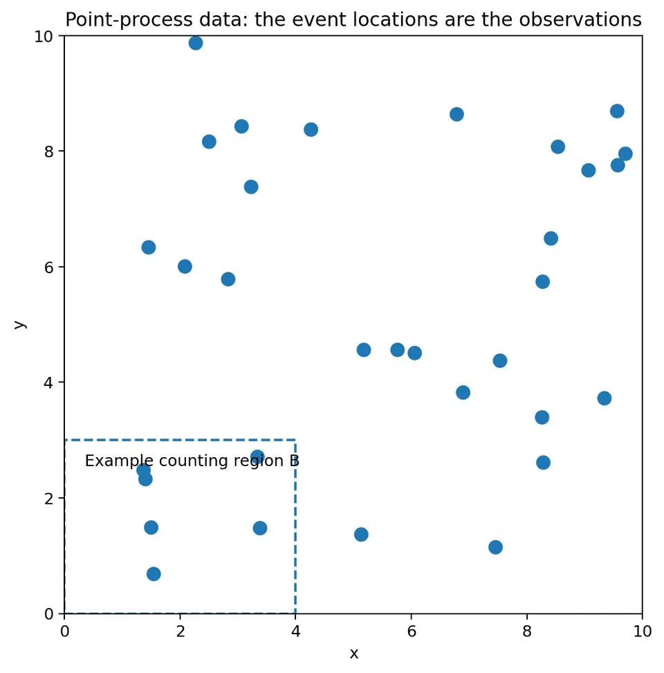
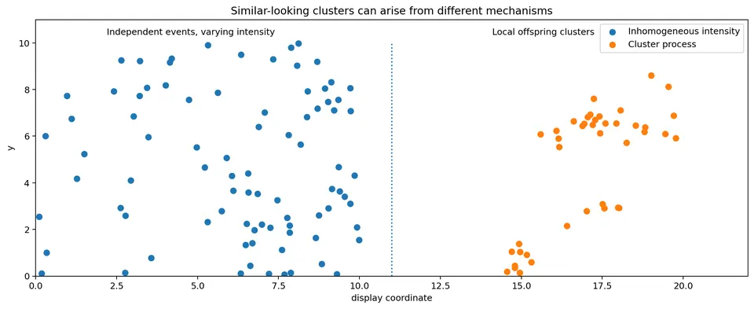
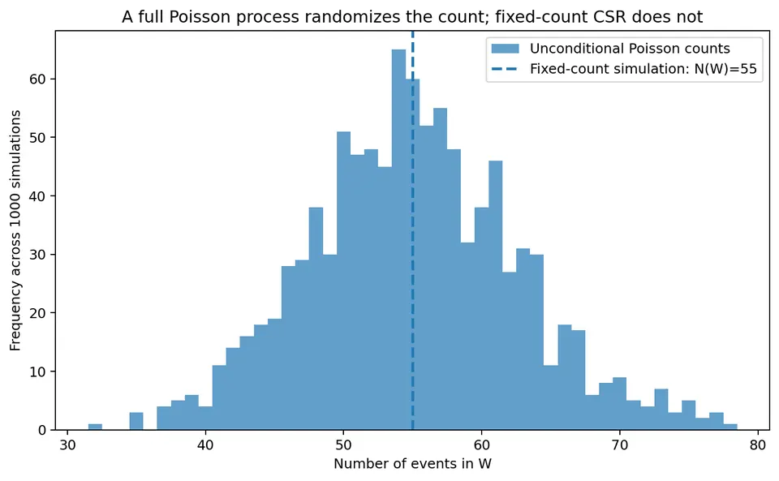
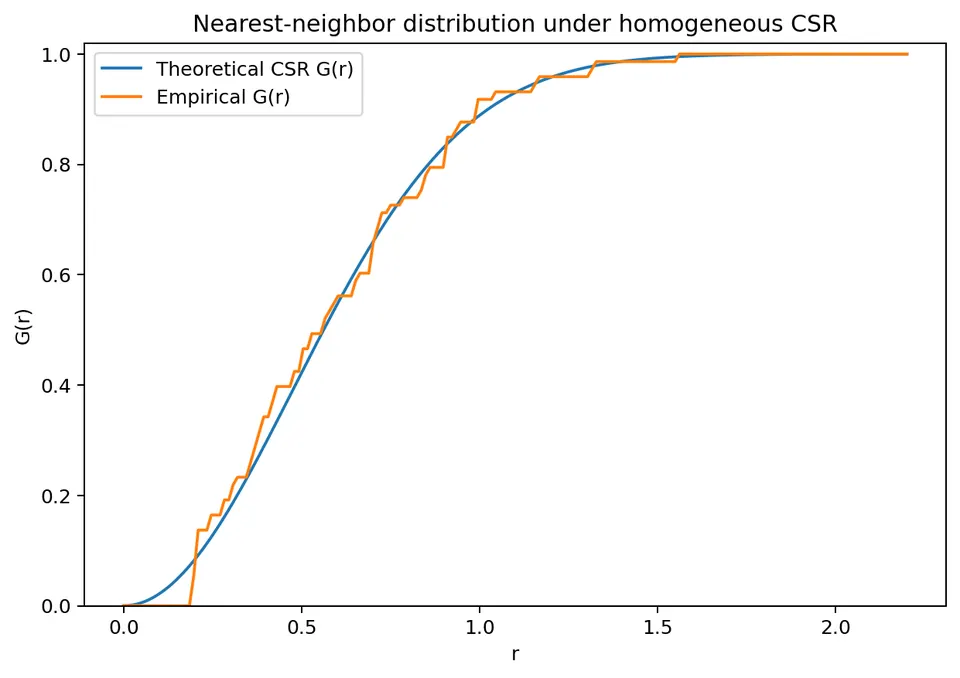
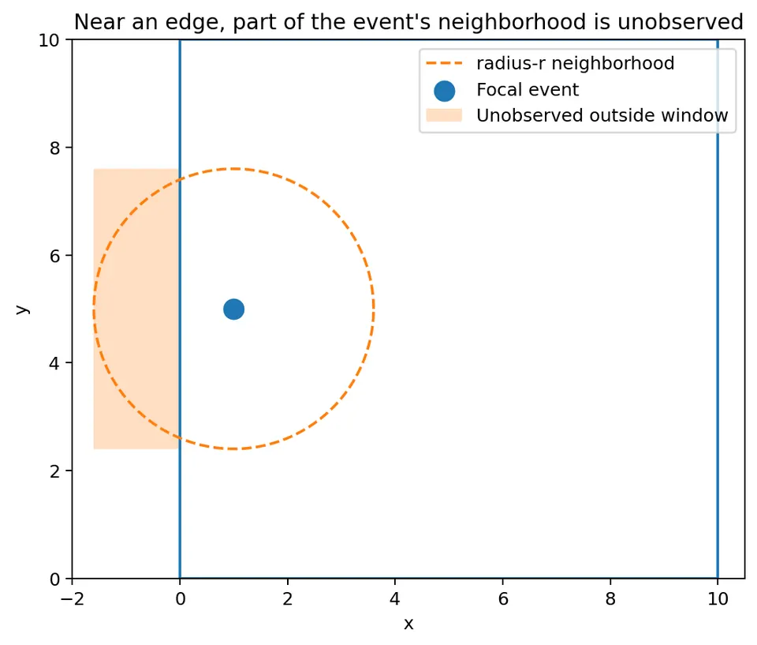
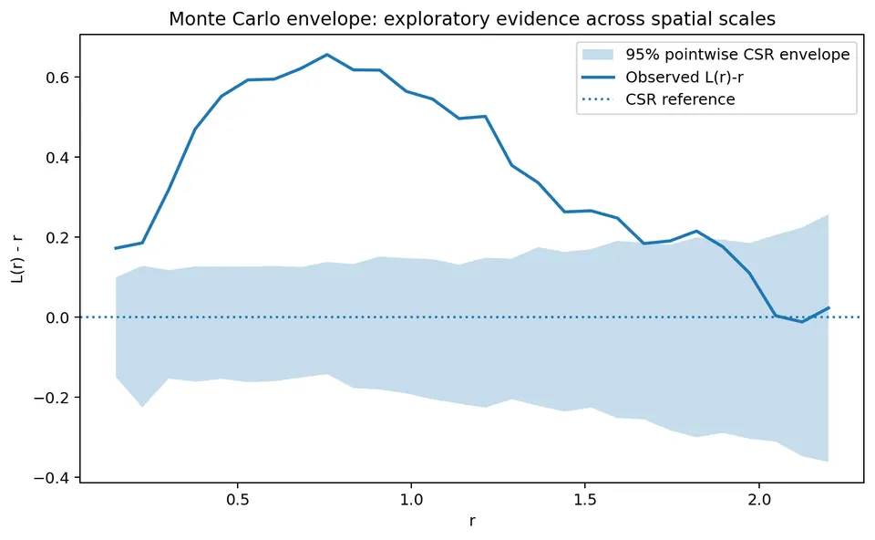
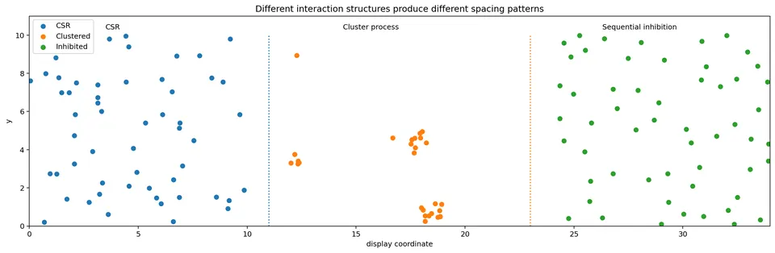
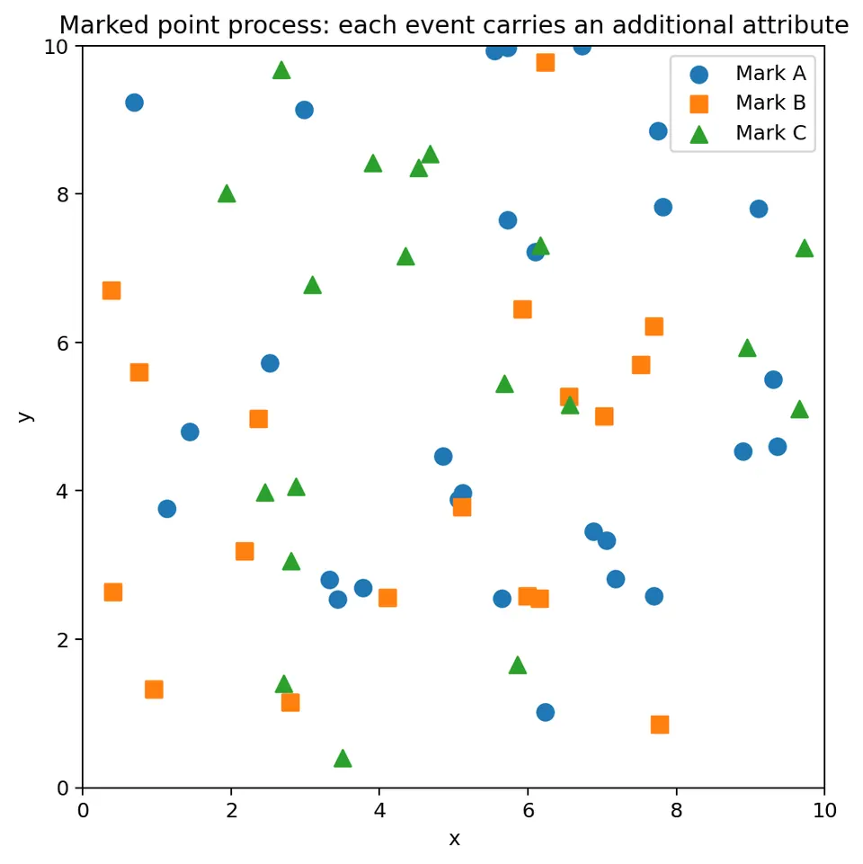

Point Processes
A spatial point process is used when the observed data are the event locations themselves. This differs from geostatistics. In geostatistics, locations are usually fixed and a value is observed at each location:
$$ \text{location } s_i \quad\longrightarrow\quad Z(s_i). $$
In a point process, the locations are the random outcome: $\{s_1,s_2,\ldots,s_n\}$. Both the number of events and their positions may be random. Examples include:
- tree stems in a forest plot;
- earthquake epicenters;
- disease cases;
- bird nests;
- shops or restaurants;
- crime incidents;
- lightning strikes;
- animal sightings.
The Observation Is a Configuration inside a Window
For a point process, absence of events in an observed area is information as well as the coordinates where events occurred. A list of five tree locations without the surveyed boundary cannot tell us whether five is a high or low count. If the observer searched only along a path, an apparently empty part of the surrounding forest need not be an observed zero.
The model must therefore specify an observation window W and distinguish the event-generating process from detection. Counts $N(B)$ refer to events within a subset B of that window. Intensity gives their expected density, while joint count behavior describes whether events tend to occur together or avoid one another beyond that density.
Consider a homogeneous Poisson model with intensity 0.2 events per square unit in a window of area 100. The total count has mean and variance 20. Divide the window into disjoint parts of areas 25 and 75. Their counts are independent Poisson variables with means five and 15; their variances are also five and 15.
Now condition on exactly 20 total events. The first part's count is Binomial$(20,0.25)$, and the second part contains the remainder. Each conditional count variance is $20(0.25)(0.75)=3.75$, and their covariance is $-3.75$. The same Poisson process therefore gives independent counts before conditioning and dependent counts after its total is fixed.
This is the distinction between simulating a whole process and simulating locations conditional on an observed count. Both can answer useful questions, but a conditional location test intentionally discards evidence about whether the total count is surprising. Marks add another layer: permuting tree species among fixed stems preserves the locations and count while testing a hypothesis about the species arrangement. These operations keep different parts of the observations fixed and must be interpreted accordingly.
What is the random object?
Suppose events occur inside a study region $W$. The observed pattern might be $\{s_1,s_2,\ldots,s_n\}$, where each
$$ s_i=(x_i,y_i) $$
is an event location. For example, if five trees are observed in a forest plot, the point pattern could be
$$ \{(1.2,3.0),(2.5,7.1),(4.8,4.4),(6.3,8.2),(8.1,2.7)\}. $$
Unlike ordinary regression, there is no fixed set of sites where a response is measured. The event locations themselves are the outcome.

Why the observation window matters
A point pattern has meaning only relative to the region in which events could have been observed. That region is the observation window $W$. If 20 events are observed, the interpretation is very different if the window has area 1 km$^2$ versus 100 km$^2$. Always record:
- the geometry of $W$;
- its area $|W|$;
- whether all parts of $W$ were equally observable;
- whether the window boundaries have scientific meaning.
The counting measure
For any region $B\subseteq W$, define
$$ N(B) = \text{number of observed events inside }B. $$
The quantity $N(B)$ is random because another realization of the process could contain a different number of events in $B$.
Numerical example
Suppose the study window is a $10\times10$ square. Let
$$ B=[0,4]\times[0,3]. $$
The area of $B$ is
$$ |B|=4\times3=12. $$
Suppose the observed pattern contains events at
$$ (1,1),\ (2,2),\ (3,1),\ (6,4),\ (8,7). $$
The first three events lie inside $B$. Therefore
$$ \boxed{ N(B)=3 }. $$
If we repeated the underlying experiment, another realization might have
$$ N(B)=1,\quad N(B)=4,\quad N(B)=0, $$
or another count. This is why a point process can be viewed as a random counting measure.
First-order structure: intensity
The intensity $\lambda(s)$ describes the expected event density around location $s$. The fundamental relationship is
$$ E[N(B)] = \int_B\lambda(s)\,ds. $$
This relationship answers the question:
How many events should we expect inside region $B$?
Homogeneous intensity
For a homogeneous process,
$$ \lambda(s)=\lambda $$
is constant across the window. Then
$$ E[N(B)] = \lambda|B|. $$
Worked numerical example
Suppose
$$ \lambda=0.2 $$
events per square kilometer. Let
$$ |B|=12\text{ km}^2. $$
Then
$$ E[N(B)] = 0.2(12) = 2.4. $$
Therefore
$$ \boxed{ E[N(B)]=2.4 }. $$
What does 2.4 mean?
It does not mean that 2.4 events will literally be observed. Counts must be integers. It means that across many hypothetical repetitions, the average count in regions of this size would approach 2.4. For example, observed counts across repeated regions might be $2,\ 4,\ 1,\ 3,\ 2,\ldots$ while their long-run average is about 2.4.
Estimating a homogeneous intensity
If $n$ events are observed in a window of area $|W|$, the natural estimator is
$$ \hat\lambda = \frac{n}{|W|}. $$
Example
Suppose
$$ n=35 $$
events are observed in a rectangular window measuring
$$ 5\text{ km}\times4\text{ km}. $$
The area is
$$ |W|=5(4)=20\text{ km}^2. $$
Therefore
$$ \hat\lambda = \frac{35}{20} = 1.75. $$
So the estimated intensity is
$$ \boxed{ 1.75\text{ events per km}^2 }. $$
This is a sensible summary only when constant intensity is scientifically plausible.
Inhomogeneous intensity
Intensity need not be constant. An inhomogeneous point process has $\lambda(s)$ that changes with location. For example,
$$ \lambda(x,y) = \exp( \beta_0+\beta_1x+\beta_2y ) $$
can represent a smoothly varying spatial intensity. Intensity can also depend on covariates such as:
- elevation;
- temperature;
- distance to roads;
- population density;
- soil type;
- distance to water;
- urban land use.
Numerical example
Suppose
$$ \lambda(x) = \exp(-1+0.15x). $$
At
$$ x=2, $$
the intensity is
$$ \lambda(2) = \exp(-1+0.15(2)) = \exp(-0.7) \approx0.497. $$
At
$$ x=8, $$
$$ \lambda(8) = \exp(-1+0.15(8)) = \exp(0.2) \approx1.221. $$
So the expected local event density near $x=8$ is about $1.221/0.497\approx2.5$ times that near $x=2$ (the ratio is $e^{0.15\cdot6}=e^{0.9}$).
Why intensity must be separated from interaction
This distinction is fundamental in point-process analysis. A map can appear clustered for two very different reasons.
Varying first-order intensity
Events may be conditionally independent even when intensity is high in some places and low in others. Example:
- many stores downtown;
- few stores in low-population outskirts.
The stores may be conditionally independent once population density and commercial opportunity are accounted for.
Event interaction
The occurrence of one event changes the probability of another event occurring nearby. Examples:
- offspring trees appearing near parent trees;
- contagious disease spread;
- territorial animals avoiding one another;
- plants competing for local resources.
These mechanisms have different scientific interpretations.

Main lesson
A clustered-looking map does not by itself show attraction among events. First model or otherwise account for $\lambda(s)$. This is the point-process analogue of separating a spatial mean trend from residual dependence in geostatistics.
The homogeneous Poisson process
The homogeneous Poisson point process is the standard reference model for complete spatial randomness (CSR) under homogeneous intensity. It has three key properties.
Poisson counts
For a region $B$,
$$ N(B) \sim \mathrm{Poisson}(\lambda|B|). $$
Independent disjoint counts
If
$$ B_1\cap B_2=\varnothing, $$
then $N(B_1)$ and $N(B_2)$ are independent.
Uniform locations conditional on the count
Conditional on
$$ N(W)=n, $$
the $n$ event locations are independent and uniformly distributed over $W$.
Poisson count calculation
For
$$ N(B)\sim\mathrm{Poisson}(\mu), $$
the probability of exactly $k$ events is
$$ P[N(B)=k] = e^{-\mu} \frac{\mu^k}{k!}. $$
For a homogeneous Poisson process,
$$ \mu=\lambda|B|. $$
Worked example
Use
$$ \lambda=0.2 $$
and
$$ |B|=12. $$
Then
$$ \mu=0.2(12)=2.4. $$
What is the probability of observing exactly 3 events?
$$ P[N(B)=3] = e^{-2.4} \frac{2.4^3}{3!}. $$
Now
$$ 2.4^3=13.824 $$
and
$$ 3!=6. $$
Therefore
$$ P[N(B)=3] = e^{-2.4} \frac{13.824}{6}. $$
Because
$$ e^{-2.4}\approx0.09072, $$
we obtain
$$ P[N(B)=3] \approx 0.09072(2.304) $$
$$ \boxed{ P[N(B)=3]\approx0.209 }. $$
So under this model there is about a 20.9% chance of exactly 3 events in the region.
Unconditional Poisson simulation versus fixed-count simulation
This distinction is subtle but important.
Full homogeneous Poisson-process simulation
First draw
$$ N(W) \sim \mathrm{Poisson}(\lambda|W|). $$
Then, conditional on that random count, draw all event locations independently and uniformly over $W$. Both the total count and the event positions are random.
Fixed-count uniform simulation
Suppose instead we decide first that
$$ n=50 $$
and then draw exactly 50 independent uniform locations. That simulation has the same distribution of locations as a homogeneous Poisson process conditional on
$$ N(W)=50. $$
But the count is no longer random. Conditional on $N(W)=n$, the count in a subregion $B$ is Binomial$(n,|B|/|W|)$ under uniform sampling. Its variance is $np_B(1-p_B)$, where $p_B=|B|/|W|$. Counts in disjoint subregions are then negatively related because they share the fixed total. In an unconditional Poisson process, those disjoint counts are independent Poisson variables. Fixed-count simulation therefore preserves conditional location randomness but deliberately removes one component of count variability.

Why does this distinction matter?
If the observed count is treated as fixed by the study design, conditioning on $n$ can be appropriate. If variability in the total count is scientifically relevant, an unconditional Poisson simulation better represents the full model.
Deriving the Poisson Point-Pattern Likelihood
Partition W into sufficiently small cells with areas $\Delta A_j$. Under a Poisson model with locally almost constant intensity, the chance that a cell contains no event is approximately $e^{-\lambda(s_j)\Delta A_j}$, while the chance of one is approximately $\lambda(s_j)\Delta A_j e^{-\lambda(s_j)\Delta A_j}$. Counts in disjoint cells are independent.
Multiplying those probabilities across cells and letting their sizes shrink gives, up to a factor independent of the intensity parameters,
$$ L(\theta)\propto \exp\left[-\int_W\lambda_\theta(s)\,ds\right] \prod_{i=1}^n\lambda_\theta(s_i). $$
Thus
$$ \ell(\theta)=\sum_{i=1}^n\log\lambda_\theta(s_i) -\int_W\lambda_\theta(s)\,ds+\text{constant}. $$
The sum rewards intensity at observed events. The integral penalizes predicted events over the whole observed window, including empty parts. Omitting it would let a model increase intensity everywhere without limit. For constant intensity, differentiating $n\log\lambda-\lambda|W|$ yields $\hat\lambda=n/|W|$ when $n>0$, explaining the estimator used above. If no events are observed, the homogeneous likelihood is maximized at the boundary $\lambda=0$ when that boundary is allowed.
For a varying intensity, write $\Lambda_W=\int_W\lambda(s)\,ds$. Conditional on the count, locations have density $f(s)=\lambda(s)/\Lambda_W$. If half of a 100-unit window has intensity 0.1 and the other half intensity 0.3, expected counts are five and 15. Conditional on an event in the window, its probability of being in the higher-intensity half is $15/20=0.75$, even though the halves have equal area.
If $\lambda_\theta(s)=a\,g_\eta(s)$, conditioning on the count cancels the scale a from the location density. Conditional locations can inform the shape parameters $\eta$, while total-count information is needed to estimate the overall scale from this pattern. “Uniform locations” is therefore a property of homogeneous conditional Poisson sampling, rather than a general instruction for simulating every fitted point-process model.
Nearest-neighbor distance
For each event, calculate the distance to its nearest other event. For event $i$,
$$ d_i = \min_{j\neq i} \|s_i-s_j\|. $$
Nearest-neighbor distances summarize short-range spacing. Small nearest-neighbor distances suggest that events often have close companions. Large nearest-neighbor distances (relative to the CSR expectation $\frac{1}{2\sqrt\lambda}$) suggest regular spacing or inhibition.
The theoretical nearest-neighbor distribution under CSR
For a homogeneous planar Poisson process on an unbounded region,
$$ G(r) = P(\text{nearest-neighbor distance}\le r ) $$
is
$$ \boxed{ G(r) = 1-e^{-\lambda\pi r^2} }. $$
Why this formula appears
For the nearest neighbor to be farther than $r$, there must be no other event within a disk of radius $r$ around a typical event. The area of that disk is $\pi r^2$. Under a homogeneous Poisson process, the expected number of events in that disk is $\lambda\pi r^2$. The probability of zero events is
$$ e^{-\lambda\pi r^2}. $$
Therefore
$$ P(D>r) = e^{-\lambda\pi r^2}. $$
Hence
$$ P(D\le r) = 1-e^{-\lambda\pi r^2}. $$
The disk is centered on a typical existing event and excludes that event itself. For a Poisson process, conditioning on this event leaves the other events distributed as the original process, which justifies using the zero-count Poisson probability. This property is special to the Poisson reference. Integrating its survival function also gives $E[D]=\int_0^\infty e^{-\lambda\pi r^2}\,dr=1/(2\sqrt\lambda)$. A distance from a randomly chosen empty location has the same distribution for Poisson processes, but need not do so for a general clustered or inhibited process.
Numerical nearest-neighbor example
Suppose
$$ \lambda=0.08 $$
events per square unit. What is the probability that the nearest neighbor is within
$$ r=2 $$
units? Use
$$ G(2) = 1-e^{-0.08\pi(2^2)}. $$
Because
$$ 2^2=4, $$
$$ 0.08\pi(4) = 0.32\pi \approx1.0053. $$
Therefore
$$ G(2) = 1-e^{-1.0053}. $$
Since
$$ e^{-1.0053} \approx0.366, $$
we get
$$ \boxed{ G(2)\approx0.634 }. $$
Interpretation:
Under homogeneous CSR with intensity 0.08, about 63.4% of events are expected to have their nearest neighbor within 2 distance units.

Boundary effects in nearest-neighbor calculations
The theoretical formula
$$ G(r)=1-e^{-\lambda\pi r^2} $$
assumes an unbounded plane. Real studies use finite observation windows. An event near the boundary has part of its surrounding neighborhood outside the observed region. A potential nearest neighbor just outside the window would not be observed. Naive nearest-neighbor summaries can therefore be distorted near boundaries. Possible responses include:
- border correction;
- toroidal corrections in some simulation settings;
- model-based edge corrections;
- restricting interpretation to short distances relative to the window.
Ripley's K function
Ripley's $K$ function summarizes point-pattern structure over a range of distances. For a stationary process with intensity $\lambda$,
$$ K(r) = \frac{1}{\lambda} E[ \text{number of additional events within distance }r \text{ of a typical event} ]. $$
This definition addresses the question:
After adjusting for overall event density, how many neighboring events are found within distance $r$ of a typical event?
CSR benchmark for Ripley's K
Under homogeneous complete spatial randomness in two dimensions,
$$ \boxed{ K_{\mathrm{CSR}}(r)=\pi r^2 }. $$
This equals the area of a circle of radius $r$. Why? Under CSR, the expected number of other events inside a radius-$r$ disk is $\lambda\pi r^2$. Dividing by $\lambda$ gives
$$ K(r) = \pi r^2. $$
Interpreting K
Compare an observed or estimated $\hat K(r)$ with $\pi r^2$. Broadly:
$$ \hat K(r)>\pi r^2 $$
suggests more nearby event pairs than expected under CSR. This is consistent with clustering over distances up to $r$. Conversely,
$$ \hat K(r)<\pi r^2 $$
suggests fewer nearby pairs than expected. This is consistent with inhibition or regular spacing over distances up to $r$. The interpretation is scale dependent. A process might be:
- inhibited below 1 m;
- approximately CSR around 3 m;
- clustered around 10 m.
For this reason, $K$ is examined as a curve rather than at a single distance.
A simple empirical K calculation
Ignoring edge correction for the moment, a common estimator for a window of area $A$ is
$$ \hat K(r) = \frac{A}{n(n-1)} \sum_{i=1}^n \sum_{j\neq i} I(d_{ij}\le r). $$
Here:
- $A=|W|$;
- $n$ is the number of observed events;
- $d_{ij}$ is the distance between events $i$ and $j$;
- $I(\cdot)$ equals 1 when the statement is true and 0 otherwise.
Worked example
Suppose:
$$ A=100, $$
$$ n=5, $$
and at distance
$$ r=3 $$
there are 3 unordered event pairs within distance 3. Because the double sum counts each pair twice, $(i,j)$ and $(j,i)$, 3 unordered pairs become $6$ ordered pairs. Therefore
$$ \hat K(3) = \frac{100}{5(4)}(6). $$
Since
$$ 5(4)=20, $$
$$ \hat K(3) = \frac{100}{20}(6) = 5(6) $$
$$ \boxed{ \hat K(3)=30 }. $$
Under CSR,
$$ K_{\mathrm{CSR}}(3) = \pi(3^2) = 9\pi \approx28.27. $$
Thus
$$ 30>28.27. $$
This small difference suggests slightly more nearby pairs than expected under CSR at that scale, but the calculation alone does not establish statistically significant clustering.
K is cumulative
A key feature of Ripley's $K$ function is that it is cumulative. If
$$ r=10, $$
the count includes all neighbors at distances
$$ 0<d\le10. $$
Therefore nearby-pair information from shorter distances contributes to every larger value of $K(r)$. As a result, nearby points on a $K$ curve are strongly dependent. Each radius should not be interpreted as an independent statistical test.
Edge effects in K
Consider an event near the left boundary of a rectangular study window. A circle of radius $r$ around the event extends partly outside the observed window. If only visible neighbors are counted, possible neighbors in the unobserved part of the circle are missed. Ignoring this typically biases estimated pair counts downward.

Common corrections include:
- border or guard-zone correction;
- translation correction;
- isotropic correction.
No correction can recover information that was never observed. Edge correction adjusts the contribution of available information under assumptions about the observation process.
Simple border correction
A simple border method uses only points at least distance $r$ from the window boundary as focal points. Suppose the study window is
$$ [0,10]\times[0,10]. $$
At radius
$$ r=2, $$
a point at $(1,5)$ is only 1 unit from the left boundary. It is excluded as a focal point for that radius. A point at $(5,5)$ is more than 2 units from every boundary and can be retained.
Tradeoff
Border correction reduces edge bias but also discards information. At large $r$, very few interior focal points may remain. For this reason, $K(r)$ should not be evaluated at arbitrarily large radii relative to the study window.
L transformation
Because
$$ K_{\mathrm{CSR}}(r)=\pi r^2, $$
the CSR curve is nonlinear. A common transformation is
$$ L(r) = \sqrt{ \frac{K(r)}{\pi} }. $$
Under CSR,
$$ L(r)=r. $$
Another common display is
$$ L(r)-r. $$
Then the CSR benchmark becomes a horizontal zero line. Broadly:
- positive $L(r)-r$: clustering;
- negative $L(r)-r$: inhibition.
This transformation makes departures from CSR easier to visualize, but simulation-based uncertainty is still needed.
Pair Correlation Explains Why K Is Cumulative
For a stationary isotropic process, the pair-correlation function g(r) compares the density of pairs at separation r with the density under independent Poisson placement at the same intensity. Around a typical event, an annulus of radius r and small width $dr$ has area approximately $2\pi r\,dr$. Its expected additional-event count is $\lambda g(r)2\pi r\,dr$.
Integrating those annuli and dividing by intensity gives
$$ K(r)=\int_0^r2\pi t\,g(t)\,dt, \qquad g(r)=\frac{K'(r)}{2\pi r}\quad(r>0) $$
when the derivative exists. Poisson placement has $g(r)=1$, recovering $K(r)=\pi r^2$. An excess of pairs at short distances enters every later value of K because it remains part of the cumulative integral. Consequently K above the Poisson curve at 10 m does not establish a new interaction specifically at 10 m. A short-distance excess can explain the difference.
Estimating g requires a local distance-band or smoothing choice and is noisier than estimating a cumulative K curve. The two summaries trade local distance resolution against averaging. Neither supplies a mechanism without an intensity model and an appropriate reference distribution. The cluster example below gives a process for which this cumulative effect can be calculated explicitly.
A Translation Edge Weight Can Be Calculated from Window Overlap
For a rectangular window of width L and height H, the overlap between W and its translation by displacement $(\Delta x,\Delta y)$ has area
$$ A_{\mathrm{overlap}}=(L-|\Delta x|)_+(H-|\Delta y|)_+, $$
where $(v)_+=\max(v,0)$. Only that overlap permits both ends of a pair with this displacement to be observed. A translation correction therefore weights an observed ordered pair by $|W|/A_{\mathrm{overlap}}$.
In a $10\times10$ window, displacement $(3,4)$ leaves overlap $7\times6=42$. Its pair weight is $100/42\approx2.381$, compared with one in the uncorrected count. Pairs whose displacement is difficult to observe receive more weight. One finite-count normalization consistent with the earlier estimator is
$$ \hat K_{\mathrm{trans}}(r) =\frac{|W|}{n(n-1)} \sum_{i\ne j} \frac{|W|}{A_{\mathrm{overlap}}(s_i-s_j)} \mathbf1(d_{ij}\leq r). $$
Some implementations use a different finite-count intensity normalization, which should be checked before comparing small-sample outputs. At large displacements, overlaps can become tiny and individual weights large, increasing variance. Edge correction represents missing pair opportunities under stationarity; it does not make arbitrary long-distance summaries stable or repair a wrong observation window. The spatstat K documentation describes the available translation, border, and isotropic corrections.
Monte Carlo envelopes
A common point-process diagnostic compares an observed summary function with simulations from a reference model. For example, to assess homogeneous CSR:
- estimate or specify $\lambda$;
- simulate many CSR patterns in the same window;
- calculate $K(r)$ for each simulation;
- calculate the observed $K(r)$;
- compare the observed curve with the simulated curves.
For each radius, one can calculate lower and upper simulated quantiles. These bounds form a pointwise Monte Carlo envelope.

What is the envelope calculating?
Suppose we generate
$$ M=199 $$
simulated patterns. At radius
$$ r=2, $$
we obtain 199 simulated values $\hat K_1(2),\ldots,\hat K_{199}(2)$. A 95% pointwise envelope can be approximated using the 2.5% and 97.5% quantiles of those simulated values. The same is done separately for every radius.
Pointwise is not the same as global
This distinction is important. A 95% pointwise envelope controls the simulated range separately at each radius. When many radii are examined, an observed curve may leave the envelope somewhere simply by chance. Therefore a pointwise envelope is not automatically a 5% global test over the entire curve. Formal global-envelope methods handle the multiple-distance problem more carefully.
If reference parameters are estimated from the observed pattern, simulating from the fitted model does not by itself provide exact composite-null calibration. Re-estimation within simulations or a calibrated global-envelope method may be required, depending on the statistic and test. The direction of any size distortion is method dependent; it should not be assumed always conservative. Conditioning on the observed count provides another specific null for homogeneous Poisson locations, with count variation intentionally excluded. For introductory analysis, pointwise envelopes remain useful exploratory diagnostics when their limitations are stated clearly.
The reference model must match the scientific question
A CSR envelope is meaningful only when homogeneous CSR is a scientifically plausible reference model. Suppose event intensity clearly increases with population density. Then homogeneous CSR is already wrong at the first-order level. Comparing such a pattern with homogeneous CSR may simply rediscover the known intensity gradient. A better reference process might be an inhomogeneous Poisson process with fitted intensity $\hat\lambda(s)$. Simulation can then address the question:
Is there extra spatial interaction beyond what the fitted intensity explains?
Cluster processes
Some point patterns still show clustering after first-order intensity has been modeled. A common model is the Thomas process. One construction is:
- simulate parent points from a Poisson process;
- each parent produces a Poisson number of offspring;
- offspring are displaced from the parent;
- Gaussian displacement is often used;
- only the offspring may be observed.
The parent points may be latent. If parents can lie outside the observation window but produce offspring inside it, simulate parents over an expanded region and retain offspring in the target window. Generating parents only inside the window can artificially reduce offspring density near its boundary. The expansion should reflect the displacement distribution, and Gaussian displacements have no exact finite cutoff, so a chosen buffer is an approximation to document.

Scientific interpretation
A Thomas process is plausible when observed events arise around underlying cluster centers. Examples might include:
- plants dispersed around parent plants;
- disease cases around local transmission sources;
- animal locations around resource patches.
A Thomas Process Produces a Long-Lasting K Excess from Short Clusters
Let parent points follow a homogeneous Poisson process with intensity $\kappa$. Each parent independently produces a Poisson number of offspring with mean m. Displace offspring independently from their parent by a two-dimensional normal vector with covariance $\sigma^2I$. The observed offspring intensity is $\lambda=\kappa m$.
Two offspring from different parents contribute the baseline pair density. Two from the same parent have a displacement difference distributed as $N(0,2\sigma^2I)$, whose density at a displacement of length r is $(4\pi\sigma^2)^{-1}e^{-r^2/(4\sigma^2)}$. This is a density per unit area in displacement space, rather than the density of the scalar distance.
For a Poisson offspring count M with mean m, $E[M(M-1)]=m^2$ is the expected number of ordered pairs from one parent. The same-parent contribution to pair density is therefore $\kappa m^2$ times the displacement density. Dividing by the baseline $\lambda^2=\kappa^2m^2$ gives
$$ g(r)=1+\frac{1}{4\pi\kappa\sigma^2} e^{-r^2/(4\sigma^2)}. $$
The mean offspring number cancels from this normalized excess, while the parent intensity and displacement scale remain. Integrating the excess through the annulus formula yields
$$ K(r)=\pi r^2+ \frac1\kappa\left(1-e^{-r^2/(4\sigma^2)}\right). $$
For $\kappa=0.1$, $m=2$, and $\sigma=0.5$, the event intensity is 0.2. At radius two, $g(2)\approx1.0583$ and $K(2)\approx22.3832$, compared with the Poisson value $4\pi\approx12.5664$. By radius four, g is approximately $1.00000036$, essentially its baseline, but K still exceeds $16\pi$ by almost ten. That persistent K difference accumulates the short-range same-parent pairs; it does not imply substantial additional pair interaction at radius four.
The construction supplies a plausible clustering mechanism, but fitting its summary curve cannot prove that literal biological parents or transmission sources generated an observed pattern. Other cluster mechanisms can produce similar second-order structure. The value of the example is that it connects a specified process, a pair-density calculation, and the cumulative summary in one model.
Inhibitory processes
Some processes exhibit inhibition or repulsion rather than clustering. Examples include:
- territorial nests;
- trees competing strongly for space;
- facilities subject to minimum-separation rules;
- hard physical exclusion zones.
A hard-core model imposes a minimum inter-event distance
$$ h>0. $$
Then no pair can satisfy
$$ d_{ij}<h. $$
This produces more regular spacing at short distances. More general Gibbs processes can represent softer forms of attraction or repulsion.
A simple inhibition calculation
Suppose a hard-core model has minimum distance
$$ h=2. $$
Consider two proposed event locations:
$$ s_1=(3,4), $$
$$ s_2=(4,5). $$
Their distance is
$$ d = \sqrt{(4-3)^2+(5-4)^2} = \sqrt{1+1} = \sqrt2 \approx1.414. $$
Because
$$ 1.414<2, $$
the pair violates the hard-core constraint. Both events cannot occur together in a pattern that satisfies this hard-core model.
Inhomogeneous Poisson processes
A Poisson process need not be homogeneous. For an inhomogeneous Poisson process:
$$ N(B) \sim \mathrm{Poisson} \left( \int_B\lambda(s)\,ds \right), $$
and counts in disjoint regions are independent for a specified deterministic intensity. Conditional on a total of $n$ events in $W$, the locations are independently distributed with density $f(s)=\lambda(s)/\Lambda_W$, where $\Lambda_W=\int_W\lambda(s)\,ds$. Thus uniform conditional locations are a special case of constant intensity, not a property of every Poisson process. This matters because an inhomogeneous Poisson pattern can look highly clustered. The visual clustering comes from variation in $\lambda(s)$ rather than event-to-event attraction.
Example of an intensity model with a covariate
Suppose event intensity depends on population density $x(s)$:
$$ \log\lambda(s) = \beta_0+\beta_1x(s). $$
Let
$$ \beta_0=-2 $$
and
$$ \beta_1=0.03. $$
At a location with population covariate
$$ x=20, $$
$$ \log\lambda = -2+0.03(20) = -1.4. $$
So
$$ \lambda = e^{-1.4} \approx0.247. $$
At
$$ x=60, $$
$$ \log\lambda = -2+0.03(60) = -0.2, $$
so
$$ \lambda = e^{-0.2} \approx0.819. $$
The second location therefore has much higher expected event density even without interaction.
A Random Intensity Creates Overdispersion without Conditional Interaction
A Cox process first draws a random intensity surface and then draws a Poisson process conditional on that surface. For a region B, let $\Lambda_B$ be the random integrated intensity. Conditional on it, $N(B)$ has mean and variance $\Lambda_B$. The laws of total expectation and total variance give
$$ E[N(B)]=E[\Lambda_B], \qquad \mathrm{Var}(N(B))=E[\Lambda_B]+\mathrm{Var}(\Lambda_B). $$
For a numerical example, suppose the integrated intensity of a region is two or ten with equal probability. Then $E[\Lambda_B]=6$ and $\mathrm{Var}(\Lambda_B)=16$, so the marginal count variance is 22. A single Poisson model with the same mean six would have variance six. Averaging over the unobserved low- and high-intensity states produces the extra variation.
The additional variance is caused by variation in the latent environment. Counts in separate regions can also be correlated because their integrated intensities share that environment. Conditional Poisson independence therefore need not imply marginal independence after the intensity surface is averaged out.
For example, a favorable habitat patch can raise event intensity for all locations in that patch. Observing one event then provides information that local intensity may be high, making additional nearby events more likely in the marginal model, even without direct attraction between events. This differs from a fixed inhomogeneous Poisson intensity, where the spatial variation is specified rather than random across realizations. Interpreting overdispersion requires comparable exposure and an explicit account of which variation is conditioned on.
Marked point processes
Events can carry additional attributes called marks. Examples include:
- tree species;
- tree diameter;
- earthquake magnitude;
- disease severity;
- incident category;
- store type.
The marked pattern can be written
$$ \{(s_i,m_i)\}_{i=1}^n, $$
where $m_i$ is the mark attached to event $i$.

Point pattern versus mark dependence
These two questions should be kept separate.
Are the event locations clustered?
This concerns the point process itself. Examples of tools:
- intensity;
- nearest-neighbor functions;
- $K$ functions;
- point-process models.
Are similar marks located near one another?
This concerns dependence in the marks, conditional on or jointly with the event locations. For example:
- Are large trees near other large trees?
- Are high-magnitude earthquakes spatially grouped?
- Are stores of one type located near stores of the same type?
These require mark-specific summaries or models. A point pattern may be CSR while its marks are strongly spatially associated, or vice versa. A random-labeling test holds the event locations fixed and permutes marks under an exchangeable-mark null. A location-process test instead simulates new event positions. These tests preserve different information and assess different hypotheses. If marks depend on covariates or observation effort, unrestricted mark permutations may be inappropriate even when testing only their spatial association.
A Small Random-Labeling Calculation
Suppose four fixed stems form two close pairs: A-B and C-D. Two stems are red-species trees and two blue-species trees. The observed labels are red, red, blue, blue, so both close pairs match in species.
Under a null that assigns the two red labels exchangeably among these four fixed stems, there are $\binom42=6$ equally likely assignments. Exactly two produce matching labels within both pairs: red-red/blue-blue and blue-blue/red-red. A statistic counting matching close pairs has its maximum value two in the observed pattern, giving an exact upper-tail p-value $2/6=1/3$.
The arrangement looks segregated, but four marked events supply little evidence under this null. The stem locations may themselves be clustered; that feature is held fixed and is not tested by label permutation. Simulating new locations would instead test a location-process hypothesis. If species probabilities vary with habitat, unrestricted random labeling can also be the wrong null; labels may need a covariate model or a justified restricted permutation.
Observation bias and exposure
Point-process intensity can reflect both the underlying event-generating process and the observation process. Suppose wildlife sightings are collected near roads. A high concentration of sightings near roads could mean:
- animals prefer roads;
- observers sample near roads;
- both.
Similarly, disease cases may be concentrated where more people live simply because more people are at risk. Exposure and observation effort should therefore be considered when interpreting intensity. Under independent location-specific detection with probability $q(s)$, the observed intensity is $\lambda_{\mathrm{obs}}(s)=q(s)\lambda_{\mathrm{true}}(s)$. From locations alone, high underlying density and high detection probability can be difficult to distinguish. Known exposure or sampling effort can enter an intensity model through an offset or observation model. A disease-case density per square kilometer, for example, is a different target from a case rate per person at risk.
A complete point-process workflow
A practical analysis can follow these steps.
Define the event
Decide exactly what counts as one event. Examples:
- one tree stem;
- one earthquake epicenter;
- one confirmed disease case.
Duplicate or ambiguously defined events can change the analysis.
Define the observation window
Record the geometry and area of $W$. Check whether all parts were observable.
Map the event pattern
Look for:
- gradients;
- clusters;
- holes;
- boundaries;
- suspicious duplicates.
Investigate first-order intensity
Ask whether density depends on:
- location;
- environmental covariates;
- population or exposure;
- sampling effort.
Choose a meaningful reference model
Possible examples:
- homogeneous Poisson;
- inhomogeneous Poisson;
- fitted cluster model;
- fitted inhibitory model.
Examine second-order summaries
Use appropriate tools such as:
- nearest-neighbor summaries;
- $K$ or $L$ functions;
- directional summaries when needed.
Use edge correction
Make sure boundary bias is addressed.
Compare with simulation
Simulate from the fitted reference model and compute the same summary statistic.
Fit interaction models only when needed
Do not add an interaction component merely because the raw map looks clustered.
Validate
Use simulation diagnostics, residual analysis, or held-out spatial information when possible.
Common mistakes
Treating point-process data like geostatistical data
In a point process, the locations themselves are random.
Ignoring the observation window
Counts and intensity have no clear interpretation without the region where events could have been observed.
Calling every visual cluster "interaction"
Varying intensity can create apparent clustering without event-to-event attraction.
Simulating a fixed number of uniform points and calling it an unconditional Poisson process
That is a Poisson process conditional on the total count.
Interpreting $K(r)$ without edge correction
Boundary truncation can reduce observed pair counts.
Treating each radius on a K curve as an independent test
$K$ is cumulative and nearby radii are highly dependent.
Treating a pointwise simulation envelope as a global 5% test
Pointwise and simultaneous inference are not the same.
Using homogeneous CSR when intensity is obviously inhomogeneous
The comparison may simply detect a first-order intensity gradient.
Confusing event clustering with spatial autocorrelation of marks
They are separate questions.
A compact worked analysis
Suppose 80 tree stems are observed in a
$$ 20\text{ m}\times20\text{ m} $$
plot. The plot area is
$$ |W| = 20(20) = 400\text{ m}^2. $$
The homogeneous intensity estimate is
$$ \hat\lambda = \frac{80}{400} = 0.2 $$
trees per square meter. At radius
$$ r=1, $$
CSR predicts
$$ K_{\mathrm{CSR}}(1) = \pi \approx3.142. $$
Suppose an edge-corrected estimate gives
$$ \hat K(1)=5.2. $$
The observed value is above the CSR benchmark. Before concluding that trees attract one another, ask:
- Is tree density higher in wetter or better-lit areas?
- Is the pattern inhomogeneous?
- Are juvenile trees clustered around parent trees?
- Could the window or sampling protocol create apparent clusters?
- Does the observed $K$ curve exceed simulations from an appropriate fitted first-order model?
The numerical difference alone does not identify the underlying mechanism.
Worked Interpretation: Event Concentration, Exposure, and Detection
Suppose a survey records 80 events in a 400-square-meter window, giving a homogeneous intensity estimate 0.2 events per square meter. An edge-corrected K estimate at radius one is 5.2, above the homogeneous Poisson value $\pi$. This is evidence to investigate, but the numerical comparison combines several modeling questions.
First ask whether all 400 square meters were observed with the same detection probability. Under independent thinning with detection probability q(s), a Poisson process with underlying intensity $\lambda_{\mathrm{true}}(s)$ is observed with intensity $q(s)\lambda_{\mathrm{true}}(s)$. A dense observed patch can result from a higher true event density, greater detection, or both. Without effort or detection information, these components may not be separately identifiable.
Next ask whether first-order variation is explained by measured habitat or exposure. For counts of events associated with people, an intensity per square kilometer is not a rate per person. A model might write $\lambda(s)=E(s)\exp\{x(s)^\top\beta\}$, with known exposure E(s), so $\log E(s)$ enters as an offset. Omitting that exposure can make a concentration of people appear to be a concentration of individual risk.
If a fitted inhomogeneous Poisson model explains the density gradient, simulations from it should reproduce that gradient in the same window. Compute the same edge-corrected summary for observed and simulated patterns. Testing all radii using separate pointwise envelopes does not give a global 5% test. A possible whole-curve statistic is the maximum standardized deviation over a prespecified radius grid; its reference distribution must be calibrated using the same construction in simulations. Parameter fitting and any model selection are part of that construction.
If residual excess remains, a cluster, Cox, or other interaction model can be considered and checked. If no excess remains, the observed concentration may be adequately represented by the intensity model at the scales examined. Neither conclusion proves a biological mechanism: density, conditional interaction, observation effort, and the choice of scale remain distinct parts of the analysis.
Questions students should be able to answer
- What is random in a spatial point process?
- What does $N(B)$ represent?
- If $\lambda=0.4$ and $|B|=10$, what is $E[N(B)]$?
- Why can a raw cluster map be misleading?
- What is the difference between unconditional CSR and fixed-count uniform simulation?
- What does $G(r)$ measure?
- Why does the formula for $G(r)$ contain $\pi r^2$?
- What does $K(r)$ measure?
- Why is $K_{\mathrm{CSR}}(r)=\pi r^2$?
- Why do boundary effects bias naive pair counts?
- Why is $K(r)$ described as cumulative?
- Why is a pointwise Monte Carlo envelope not automatically a global test?
- What scientific mechanism does a Thomas process represent?
- What scientific mechanism does a hard-core process represent?
- What is the difference between location interaction and spatial dependence in marks?